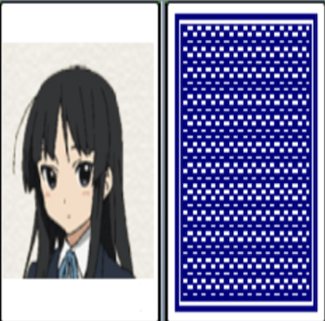
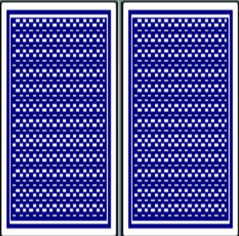
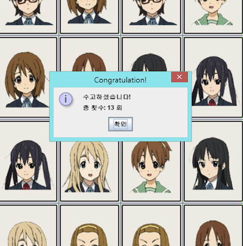

구현 기능
|  |
그림 보이기 기능 카드를 클릭하면 그림이 보입니다. |
|  |
그림 가리기 기능 카드 2개를 클릭해서 보여진 그림이 서로 다르면 그림을 다시 가립니다. |
|  |
게임 종료 판단 기능 같은 그림을 모두 찾으면 ‘수고하셨습니다!’라는 창이 뜨고 클릭 횟수까지 알려줍니다. |
사회에 기여하려고 한 점
창의적인 게임을 제작해서 출시하므로 게임을 하면서 색다른 재미를 느낄 수 있습니다.
창의적인 게임을 제작해서 출시하므로 게임을 하면서 색다른 재미를 느낄 수 있습니다.
배경과 목적
창의적인 게임을 만들어서 사람들한테 서비스를 제공하기 위해, 게임 개발자가 될 것에 대비하기 위해 저만의 게임을 제작하게 되었습니다.
창의적인 게임을 만들어서 사람들한테 서비스를 제공하기 위해, 게임 개발자가 될 것에 대비하기 위해 저만의 게임을 제작하게 되었습니다.
배운 점
- Java에서 Thread로 비동기 방식을 활용하는 법과 Multi Threading의 구조를 알게 되었습니다.
- Java Swing으로 컴퓨터 프로그램을 구현하는 법을 알게 되었습니다.
진행 절차
- 2학년 2학기 전공과목 ‘객체지향프로그래밍’ 시간에 이미지를 여러 개의 버튼으로 자르는 프로그램을 제공해 주셨습니다. 이것을 버튼의 배치를 섞은 후 버튼을 클릭하면 그림이 보이도록 하였습니다.
- 버튼 2개를 클릭했을 때, 서로 같은 그림이면 그대로 두고, 서로 다른 그림이면 0.5초 후에 해당 그림을 다시 가리도록 하였습니다. 이때, Java Thread에서 제공하는 sleep 함수를 사용하였습니다.
- 버튼을 클릭할 때마다 클릭 횟수를 세도록 하였습니다. 이 기능은 변수에 값을 1만큼 더하는 방식을 이용해서 구현하였습니다.
- 같은 그림을 모두 찾으면 ‘수고하셨습니다!’라는 창과 함께 클릭 횟수를 알려주도록 하였습니다.
- 마지막으로 게임 시작 화면을 구현하였습니다.
- 이렇게 해서 원하는 프로그램을 구현할 수 있었습니다.
역량 강화를 위해 가장 노력한 점
Java Swing으로 구현된 기존 프로그램 분석 및 창의적인 게임으로 재구현
Java Swing으로 구현된 기존 프로그램 분석 및 창의적인 게임으로 재구현
전체 구조

사용 기술
Java
Java
개발 환경
Eclipse IDE
Eclipse IDE